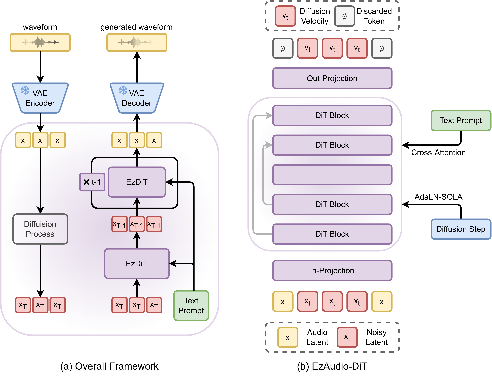

1Johns Hopkins Unversity, Baltimore, MD, USA2Tencent AI Lab, Bellevue, WA, USA
*This work was done while J. Hai was an intern at Tencent AI lab, USA.
EzAudio is an advanced text-to-audio (T2A) generation model that creates high-quality audio from text prompts. It sets a new standard for open-source T2A models by delivering fast, efficient, and realistic sound effects generation.
Realistic Audio Generation by EzAudio

Guess Which One is Generated!
Synthetic audio is highlighted by blue.
Text Prompt
Audio1
Audio2
Water lightly splashing as a bird chirps and wind blows into a microphone.
A truck engine running followed by a truck horn honking.
Text-to-Audio Generation
Text Prompt
EzAudio (Ours)
Tango
AudioLDM2
Make-An-Audio 2
A vehicle engine revving then accelerating at a high rate as a metal surface is whipped followed by tires skidding.
Water lightly splashing as a bird chirps and wind blows into a microphone.
Wood stirring in a pot followed by a wooden object falling as a woman is talking as food is sizzling and light guitar music is playing.
A man talking as water splashes and gurgles and a motor engine hums in the background.
A piano playing as plastic bonks.
A truck engine running followed by a truck horn honking.
A horse clip-clops in a windy rain as thunder cracks in the distance.